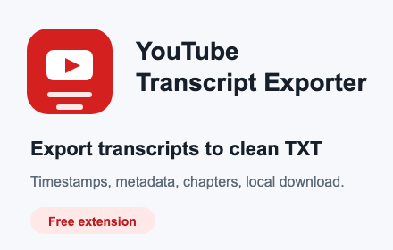
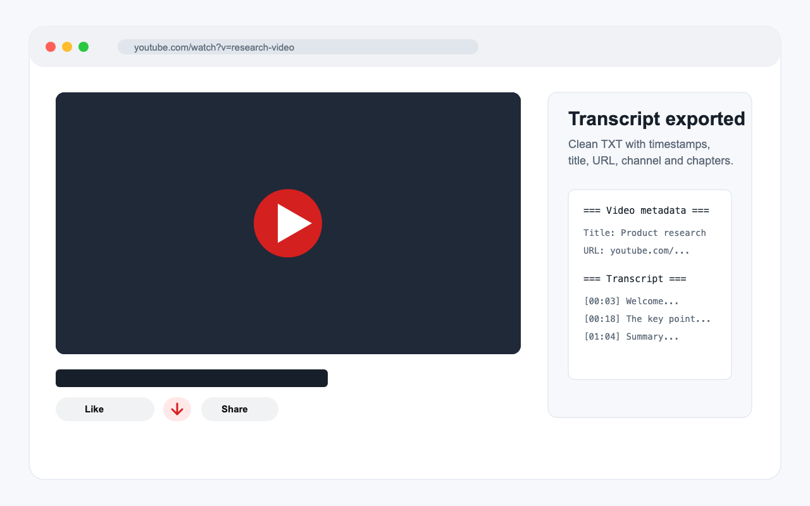
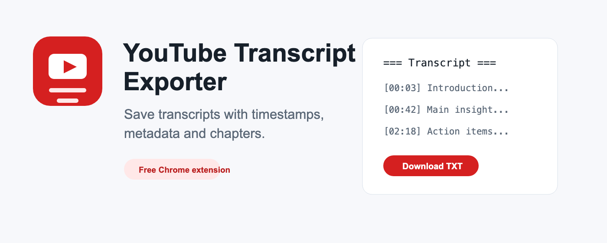

Timestamped TXT export
Save readable transcript lines that are easy to search, quote, summarize, or archive.
A free Chrome extension for saving YouTube transcripts as clean TXT files with timestamps, video metadata, descriptions, and chapters.

Save readable transcript lines that are easy to search, quote, summarize, or archive.
Include title, URL, channel, description, chapters, and visible metadata when available.
Choose the best transcript track based on the YouTube and browser interface language.
No account, no ads, no analytics, no external server, and no tracking. The extension reads the active YouTube page only when the user requests an export and saves the file locally through Chrome's Downloads API.

